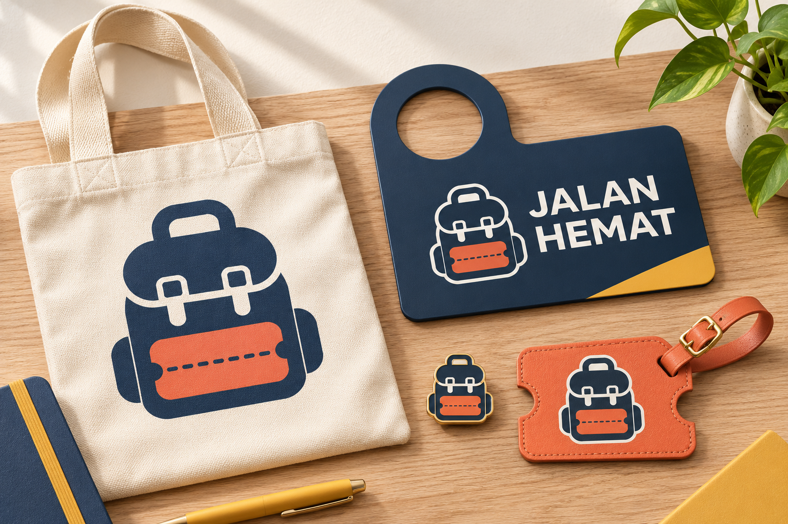
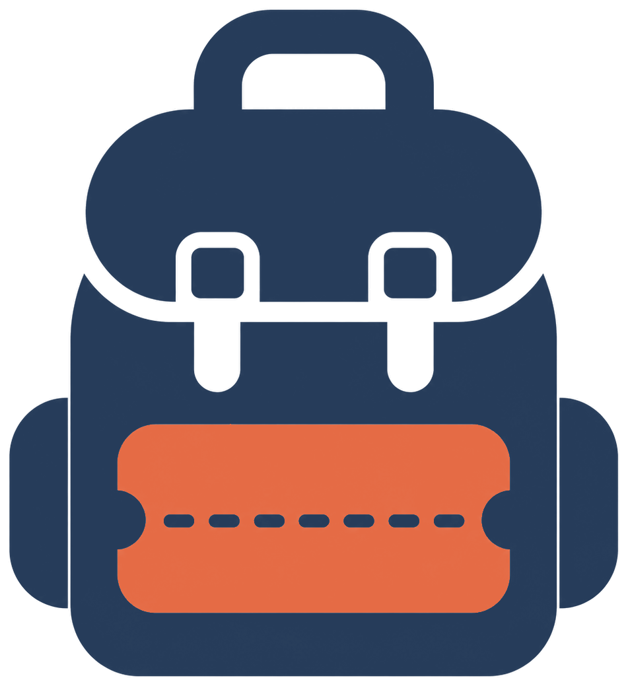
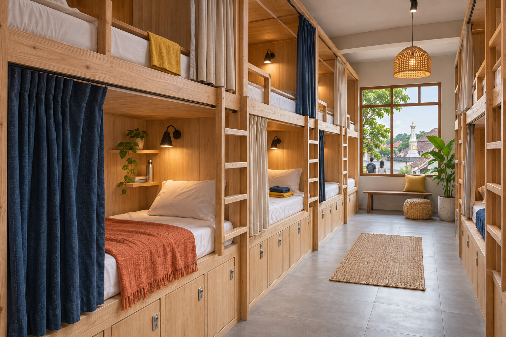
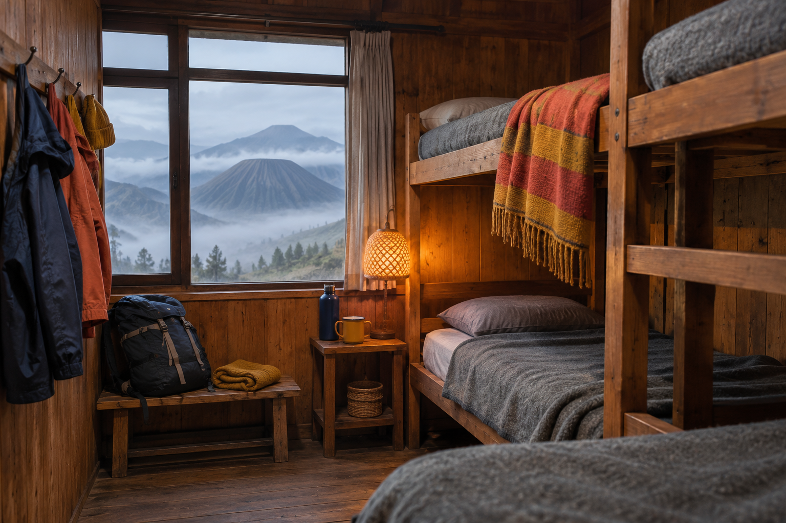

Jalan Hemat Travel
Trip mandiri, hostel & open trip dengan harga jujur. — Panduan lengkap identitas merek, sistem logo, palet warna WCAG 2.1 AA, tipografi Space Grotesk + Inter, anatomi mesin pencari, dan komponen etalase Ortasys S4.


Posisi Merek & Temuan Riset Desain (Budget & Backpacker)
Transit Departure-Board Split: Budget & hostel platforms convert best when real-time base rates and route tickers appear in the first viewport.
Perforated Ticket-Stub Console: Framing search and inventory cards as physical perforated boarding passes with a tear-off per-person split calculator builds price trust.
Free-Inclusion Transparency: Backpackers scan for value-saving inclusions (`FREE LOCKER 60L`, `FREE REFILL WATER`, `NO CURFEW`) alongside bed type (`CAPSULE POD`, `BUNK DORM`).
Coral CTA with High-Contrast Dark Ink: Coral `#E56B45` uses dark ink `#192C45` to exceed 4.5:1 AA contrast.
Master Mark, Varian Latar, Clear Space & Aplikasi Merek

Digunakan pada permukaan terang (#F7F7F2, #FFFFFF) dengan ruang bebas minimal 0,25× tinggi simbol.
Digunakan pada permukaan gelap (#263C5A, #192C45) dan bagian footer malam.
Penerapan konsisten pada papan nama, kartu tamu, dan perlengkapan perjalanan.
Token Warna Inti & Derivasi Aksesibilitas
Primary
Primary action, active navigation, key brand anchor
Primary Hover
Hover & pressed state for primary controls
Secondary
Secondary highlights, badges & supporting accents
Tertiary
Warm supporting surfaces & editorial dividers
Accent
Focused emphasis markers & category tags
Background Canvas
Main page canvas & broad section background
Surface
Cards, search console, popovers & modals
Surface Muted
Secondary container contrast & table headers
Text Primary
Headings, body copy & primary data values
Text Muted (Raw)
Metadata, captions & helper descriptions
Border
Hairline card dividers & structural rules
Success
Live price assurance & verified confirmation
Warning
Quota notices & seasonal advisories
Error
Validation alerts & destructive actions
Matriks Verifikasi Kontras WCAG 2.1 AA
Text Primary on Canvas
#252E36 on #F7F7F2
Text Primary on Surface
#252E36 on #FFFFFF
White on Primary CTA
#FFFFFF on #263C5A
Primary on Surface
#263C5A on #FFFFFF
Derived AA Muted on Canvas
#636B74 on #F7F7F2
Derived Field Border on Surface
#84909E on #FFFFFF
Space Grotesk + Inter
Aa Bb Cc
Space Grotesk
Digunakan untuk judul hero, tajuk seksi, dan nama properti utama.
Aa 0123
Inter
Rp 2.450.000 · 9–12 Nov 2026 · 2 Dewasa (Tabular Numerals aktif).
Skala Sudut & Kontainer
Pola Tata Letak & Komponen Khas Preset 10
Hero Architecture (Transit Departure Board Split):
A bold night-indigo banner (`#263C5A`) split into a left punchy value headline (`Space Grotesk`) and a right **Live Open-Trip & Hostel Bed Ticker Board** showing real-time base rates (`YOGYA POD · Rp 125.000`, `BROMO BUNK · Rp 115.000`, `MANDALIKA SURF · Rp 145.000`) with instant click-to-select route triggers.
Search Engine UI (Perforated Boarding-Pass / Ticket-Stub Console):
A crisp, thick-bordered (`border-2 border-primary`) rectangular ticket console split by a vertical dashed perforation line (`lg:border-r-2 lg:border-dashed border-line`): the left 8 columns house the route, dates, and bed/pax counters, while the right 4 columns form the **Tear-Off Ticket Stub** with a live **"Estimasi Patungan per Orang"** calculator and coral (`#E56B45`) action trigger.
Inventory Section Layout (2-Column Perforated Hostel & Open-Trip Ticket Cards):
Horizontal ticket-shaped cards featuring a left photo + bed-type badge (`CAPSULE POD` / `BUNK DORM` / `SHARING JEEP`), a middle spec list with free-inclusion badges (`FREE LOCKER 60L`, `FREE REFILL WATER`, `NO CURFEW`), and a right perforated price stub separated by a dashed border (`border-l-2 border-dashed`).
Rules Section (3-Column Utilitarian Zero-Gimmick Spec Strip):
Bold numbered specification blocks (`01 // HARGA BERSIH`, `02 // LOKER 60L AMAN`, `03 // QRIS SNAP BI BEBAS ADMIN`).
Aset Visual Khusus Jalan Hemat Travel (./assets/*.webp)


Pedoman Implementasi Positif
- ✓ Do make price and inclusions transparent.
- ✓ Do keep the interface energetic but trustworthy.
- ✓ Do prioritize useful destination and accommodation information.
- ✓ Do use coral as a focused action accent.
Batasan Kontrak Produk Ortasys S4
- ✕ Don't use fake discount badges or artificial scarcity.
- ✕ Don't imply the lowest market price without evidence.
- ✕ Don't hide taxes, fees, or important booking conditions.
- ✕ Don't make the design look cheap or visually chaotic.
- ✕ Don't expose supplier net rates, agent margins, or internal B2B data.